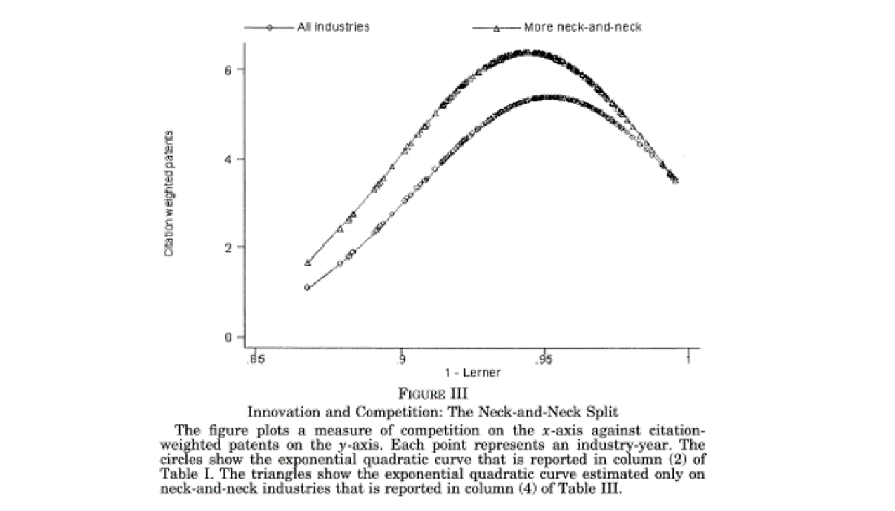
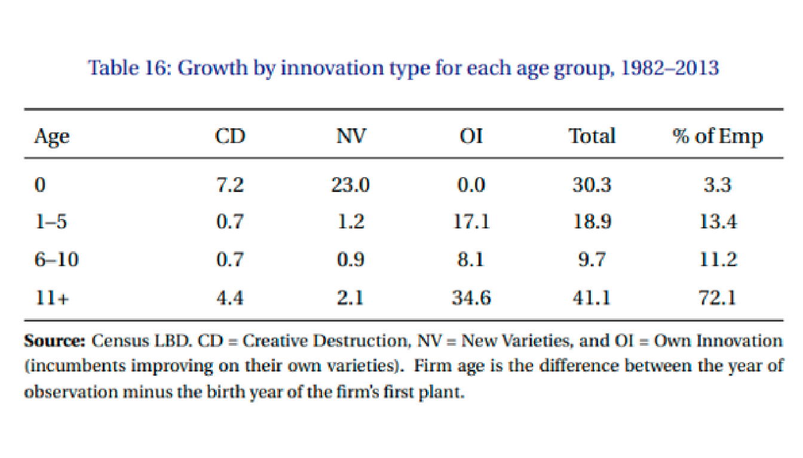

Crecimiento Económico
Competencia y Modelo Schumpeteriano
Competencia e innovación
“Competition and Innovation: an Inverted-U Relationship” (Aghion, Bloom, Blundell, Griffith y Howitt, 2005)
¿Qué tanta competencia debe de haber para impulsar la innovación?

Competencia e innovación
“Competition and Innovation: an Inverted-U Relationship” (Aghion, Bloom, Blundell, Griffith y Howitt, 2005)
Industria aérea: concentrada que genera innovación.
Productores de aviones: Boeing y Airbus en Estados Unidos y Europa, Estructura de monopsonio.
Aerolíneas grandes: monopolización de rutas hizo que se redujera la innovación desde el punto de vista del consumidor (reducción de asientos, servicios).
Aerolíneas de bajo costo: sector muy competitivo que muestra beneficios al consumidor (precios muy bajos).
En términos de innovación, ambos extremos parecen evitar este desarrollo.
Modelo Schumpeteriano
“A Model of Growth Through Creative Destruction” (Aghion y Howitt, 1992)
Dinámica del modelo
El modelo establece competencia monopolística sobre un solo producto.
Para ese producto, suponen que hay dos empresas que pueden producirlo.
Esas dos empresas compiten entre sí a la Bertrand: cada uno elige el precio que cobrará y luego deja que los clientes sepan cuánto comprar de cada empresa.
Las empresas son conscientes de que compiten entre sí y, por lo tanto, establecen sus precios estratégicamente para maximizar las ganancias, sabiendo cómo responderá la otra empresa.
Modelo Schumpeteriano
“A Model of Growth Through Creative Destruction” (Aghion y Howitt, 1992)
En este punto, las empresas asumen diferencias en los costos marginales:
Supongamos que la empresa A tiene un costo marginal de 2, y la empresa B tiene un costo marginal de 3
Si la empresa A cobra menos de 3, la empresa B no puede igualar el precio porque incurrirá en una pérdida.
Entonces, la empresa A cobrará menos de 3 y obtendrá a todos los clientes. La empresa A quiere maximizar las ganancias, por lo que cobrará 2.9, tomará todo el negocio y, por lo tanto, cobrará un margen de beneficio de aproximadamente 3/2 = 1.5.
Modelo Schumpeteriano
“A Model of Growth Through Creative Destruction” (Aghion y Howitt, 1992)
De manera más general, el markup cobrado por una empresa es igual a la relación del costo marginal de la empresa seguidora (por ejemplo, 3) al costo marginal de la empresa líder (por ejemplo, 2).

Modelo Schumpeteriano
“A Model of Growth Through Creative Destruction” (Aghion y Howitt, 1992)
¿Por qué una empresa lidera (es decir, tiene costos marginales más bajos), y por qué la otra es una empresa que sigue (es decir, tiene costos marginales más altos)?
Esto se debe a una decisión endógena de cada empresa de invertir en I&D que reduce su costo marginal.
De manera probabilística, la difusión del conocimiento entre industrias puede ayudar a esto.
Esto explica por que la empresa seguidora, con ventas cero en el modelo, está dispuesta a asumir pérdidas y esperar para invertir en I&D: si logra reducir lo suficiente su costo marginal, se puede volver la líder.
También explica a la entrada de empresa outsiders.
Modelo Schumpeteriano
“A Model of Growth Through Creative Destruction” (Aghion y Howitt, 1992)
¿Qué impulsa la inversión en I + D?
Los markups evolucionan en función de cuánto invierte cada empresa (líder, seguidor, outsider) en I&D.
La inversión depende de la brecha en el costo marginal entre el líder y el seguidor, lo que significa que la inversión en I&D depende del tamaño del markup.
Entre más grandes son las brechas (mayores son los márgenes de ganancia), menor es el esfuerzo de I&D por parte de líderes y seguidores (y outsiders).
Modelo Schumpeteriano
“Innovative Growth Accounting” (Klenow, Li, 2021)
¿Cómo se caracteriza el aumento de la concentración de mercado en EEUU?
La innovación puede tomar la forma de un flujo de nuevas variedades que no son sustitutos cercanos de ninguna variedad existente (Romer, 1990).
Alternativamente, el crecimiento podría estar impulsado por la destrucción creativa de productos existentes, como en Aghion y Howitt (1992).
Modelo Schumpeteriano
“Innovative Growth Accounting” (Klenow, Li, 2021)
Klenow y Li analizan esencialmente tres tipos de eventos que ocurren y los clasifican como diferentes tipos de innovación.
Entrada y salida de empresas. Cada vez que se abre una nueva empresa cuenta como un producto nuevo, como en Romer. El cambio neto en creación de empresas deriva en cambio en las variedades de bienes de capital.
Tamaño de empresas nuevas vs existentes. Si las nuevas empresas son más grandes que las existentes, se genera una mayor calidad de los nuevos productos en relación con los productos antiguos generando las condiciones del modelo schumpeteriano.
Empresas cada vez más grandes. Si una empresa incrementa el número de empleados, se infiere que hubo una mejora de la calidad de la empresa en su propio producto. Esta es una expansión del modelo schumpeteriano en donde la innovación surge de competidores cercanos.
Modelo Schumpeteriano
“Innovative Growth Accounting” (Klenow, Li, 2021)
¿Cómo se caracteriza el aumento de la concentración de mercado en EEUU?

Modelo Schumpeteriano
“Innovative Growth Accounting” (Klenow, Li, 2021)
Las empresas jóvenes (de 0 a 5 años) generan la mitad del crecimiento, aproximadamente tres veces más de lo que podría sugerir su participación en el empleo. Las grandes empresas contribuyen notablemente menos al crecimiento que su participación en el empleo.

Modelo Schumpeteriano
“Innovative Growth Accounting” (Klenow, Li, 2021)
La mayor parte del crecimiento adopta la forma de mejoras de calidad por parte de los incumbents en sus propios productos. Las nuevas variedades y la destrucción creativa contribuyen menos, pero siguen siendo importantes.

Modelo Schumpeteriano
- “Innovative Growth Accounting” (Klenow, Li, 2021)

Modelo Schumpeteriano
- “Innovative Growth Accounting” (Klenow, Li, 2021)